The statement forms that are shipped with MoneyWorks allow you to print both open-item and balance forward statements. Most are designed to print on plain paper or letterhead.
You can print statements for all debtors, or just selected debtors.
If no individual debtors are highlighted, or if the Names list is not open, statements will be prepared for all debtors in your system.
The statement dialog box appears.
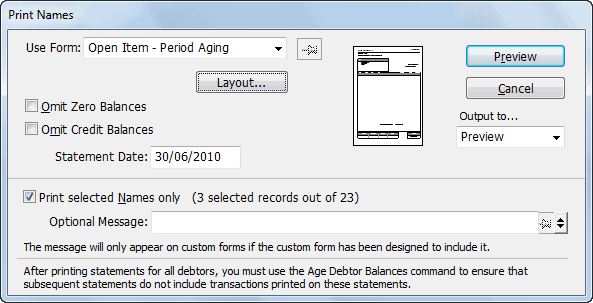
Choose the Statement form from the Use Form pop-up menu
Type in an optional message to appear on the statement
Set any options that may be appropriate.
These are discussed below.
Click the Print/_Preview_/_Send_ button
For emailing, the Mail Attachment window opens — see Emailing Forms for more information.
Include Remittance Advice: This is only available for the “Plain” statements. If set, a remittance advice will be printed at the end of the statement.
Omit Zero Balances: Set this option if you do not want to print statements for debtors with zero balances.
Omit Credit Balances: Set this option if you do not want to print statements for debtors with credit balances.
Statement Date: Normally the cut-off date for new invoices—invoices dated after this will not be shown on the statement. But does depend on how the statement form was designed.
Note: After you have successfully printed statements for all your debtors you should age the balances for the debtors. This will maintain the ages balances in the debtor’s Name record. If this is not done, the next time you print statements the same transactions may appear again (together with any new invoices or receipts).
You should age the outstanding debtor balances after printing statements. If you do not print statements, then ageing is optional, but you may like to do it on a regular monthly basis anyway. You can also “age on the fly”.
Ageing debtors performs a dual purpose:
“Current” invoices and receipts become non-current. In general this means that they will not appear on subsequent statements—the exception is unpaid invoices, which will continue to appear on open-item type statements.
The “manual aging” balances for each debtor (as shown in the Balances tab of the Names record and in the payments history) are moved left one place, eventually accumulating in the 3 or more cycles section.
Before Ageing
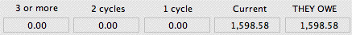
After Ageing
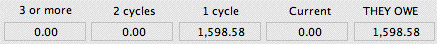
Note: Ageing is necessary for proper production of most forms of statements. If you do not require statements for customers, you can have MoneyWorks produce aged-debtor reports for your own use automatically.
To age debtor balances:
An alert box will appear asking for confirmation
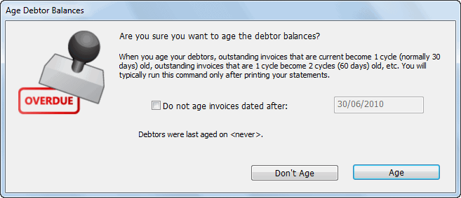
If you have entered new debtor invoices dated after the cut-off date for ageing, set the Do not age invoices dated after checkbox and enter the cutoff date
Invoices dated after this will not be aged.
All debtors are aged.
If you don’t have many debtors, the ageing may be pretty much instantaneous, so don’t be tempted to think that nothing has happened.
For information on printing an aged receivables/debtor report — see Aged Receivables. This can be printed for prior periods (although it might take considerably longer), and used as a reconciliation report. Using the Report Writer in MoneyWorks Gold, you can modify this report or create your own aged debtors (or creditors) report if you wish.
1 On customised invoices, this will only work if it has been explicitly catered for in the logic.↩︎
Creditors and Accounts Payable
2 If you do get two payments from the same debtor, just put the second aside and process as a separate batch.↩︎
3 The warning is only given if the Confirm Choices: MoneyWorks Preference option is on.↩︎
4 Only available in Batch Debtor Receipts. Receipt transactions use the “Smart” method.↩︎
People or organisations to whom you owe money are called creditors. A creditor is a supplier or vendor who will normally invoice you for goods or services supplied to you. At some stage after this you will pay the invoice. The process of managing creditors is often referred to as Accounts Payable.
Note: This chapter does not apply to MoneyWorks Cashbook which does not support creditors.
When you receive an invoice you should enter it as a Purchase Invoice, and post it. This updates the balances in the payables ledger and the general ledger (and possibly the stock). If you are going to pay the invoice immediately, you can treat it as a straight payment.
When you come to pay the invoice at a later date, you do not need to re-enter it. Instead you make a special kind of payment, or you can use the Batch Creditor Payments command to pay a number of invoices. Paying an invoice will adjust your bank account, and also reduce the amount of money you owe.
MoneyWorks allows you to pay creditors either by cheque (it will print the cheques for you), or it can prepare a file of payments that can be submitted to many bank’s on-line banking systems, and even prepare emails to alert the creditor that payment has been made.
This chapter covers:
receiving and recording invoices from suppliers
paying invoices (using cheques or electronically)
taking advantage of prompt payment discounts
overpaying creditors (which, oddly, some people want to do!)
When you receive invoices that you are not going to pay immediately they should be entered into MoneyWorks as Purchase Invoices.
Note: In MoneyWorks Gold, if you have already entered a Purchase Order for the goods or services on the Invoice, you do not need to enter the invoice. Instead open the original purchase order and check the quantity and prices on it against those on the invoice, and “Process” the order — see Receiving the Goods and Invoice.
Note: If you and your supplier are using e-invoicing, you can retrieve the invoices automatically with no need to rekey (although obviously you need to check them). See E-Invoicing.
Note: Another way to receive supplier invoices (and also purchase orders) electronically is to use Invoice Automation, which is available as an optional MoneyWorks Service.
To enter a purchase invoice:
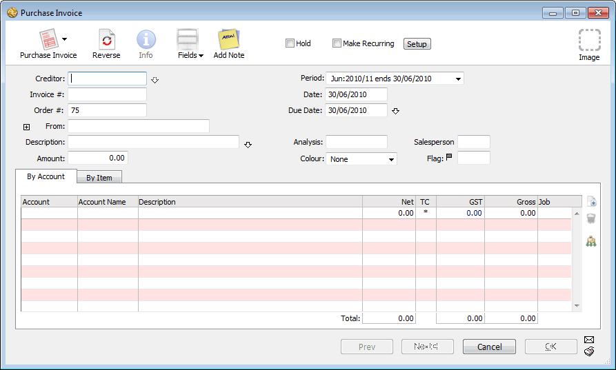
The Purchase Invoice entry window will be displayed.
If the Creditor already exists... If you cannot remember the code, tab out of the field (or enter the first few characters of the code and press tab) to display the Names Choices window. Double-click on the creditor to transfer it to the transaction.
If the Creditor is a new one... If the creditor is not already in your system, you will need to create a new creditor record. This can be done as you enter the invoice. Type the new code for the creditor and press the tab key. As this is not a valid code, the choices window will display. Click the new button or press Ctrl-N/⌘-N to create a new creditor.
If the Creditor is a branch and you will pay Head Office... If the purchase is from a branch, but you are expected to pay the head office (it does happen!), enter the branch code. When you come to pay, the remittance will be automatically made out to the head office — see Head Office Billing.
This is the creditor’s reference number (TheirRef) for the invoice. You can store up to 21 characters in this field.
Checking for Duplicate Invoice Numbers If the Document Preference Check for Dup. Creditor Invoice Numbers is set, MoneyWorks will warn you if there is already a purchase invoice with the same number from that creditor. The warning is given when you attempt to accept the invoice (i.e. the OK or Next button is clicked), not when the number is entered.
If the creditor offers a discount for prompt payment, details of this will be shown next to the Due Date field. The prompt payment is based on the transaction date, not the payment date.
This is your reference number for the invoice (OurRef). You can store up to 11 characters in this field. Note that access to this field is controlled in the Sequence Nos tab of the MoneyWorks preferences.
If necessary, change the Due Date
MoneyWorks automatically calculates the due date based on the payment terms stored in the creditor’s record.
The Discount Terms window will open. Change the settings and click OK to change the terms for this invoice only.
Note If the total of the invoice as calculated by MoneyWorks is slightly different to that of the original, this is due to different rounding methods. See Adjusting GST/VAT/TAX Rounding for a quick fix.
If for some reason you want to hold payment for a purchase invoice, set the Hold check box at the top of the screen.
Note that you can change the Mail and Delivery addresses on the transaction. However these are ignored when the invoice is paid—the
The invoice will not be able to be posted until the Hold is removed. At a later date when you have resolved the problem with the invoice, you can uncheck this option and post the transaction for payment as usual.
Setting the Hold check box means the invoice cannot be posted, and hence paid.
address for the remittance will be the postal address from the creditor’s Name record (or the associated head office Name record).
Enter the total amount (in the currency of the supplier) of the invoice into the Amount field
Note that the OK and Next buttons dim when an amount is entered into the Amount field. The transaction is not complete until you have allocated the total amount to one or more accounts.
— see Entering Detail Lines.
Unposted invoices will not appear in the Payables list (and cannot be paid).
Click the OK button if this is the last transaction to be entered.
Note: You can also put a posted invoice on hold, which will prevent it you paying it (it will not appear in the list of invoices eligible to be paid1).
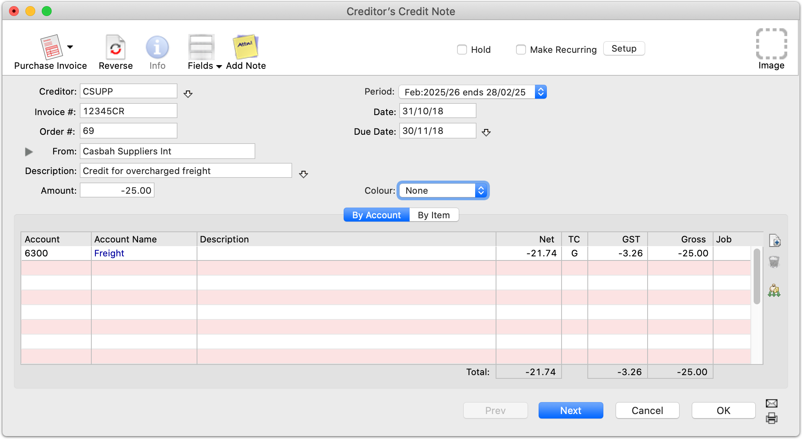
In MoneyWorks a credit note from a supplier is entered as a negative purchase invoice—the window title changes when the Amount field is negative.It will (when posted) appear in the payables list until either “payment” for it is made, or it is offset against another invoice from the same creditor — see Paying Your Creditors, or Contra Invoices.
For a credit note involving products, you should enter a negative quantity—if these are stocked items, they will be taken out of stock when the credit note is posted. If the credit note is not going to affect your inventory, use a service transaction instead.
Purchase invoices can be paid individually using a payment transaction that is tagged with the creditor’s code, or you can pay a batch of invoices at once using the Creditors Cheque Run command.The Payables tab in the Transaction list shows a complete list of posted, unpaid invoices.
If you just have one or two creditors to pay, you can use a Payment transaction.
To do this you should have the transactions window topmost and press Ctrl- N/⌘-N., and if necessary set the type of the new transaction.
Tip: To pay a particular invoice, right-click on the invoice in the Payables list and choose Pay this Invoice.
Set the Supplier check box and enter the Supplier code
When you tab out of the creditor code field, a new Payment on Invoice tab will be added to the body of the transaction.
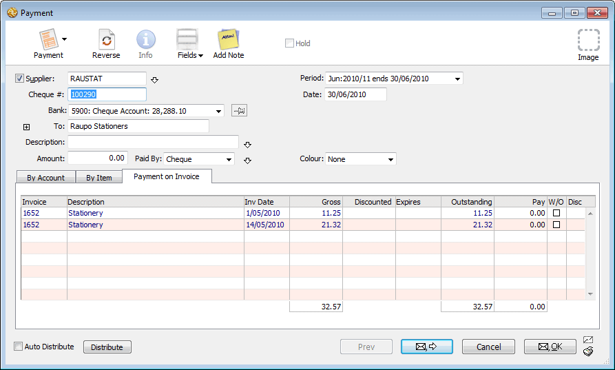
All the outstanding invoices (except those on hold) from the creditor are listed in this tab, along with the details of any prompt payment discounts available. You need to indicate how much you wish to pay in total in the Amount field, and then allocate this against the unpaid invoices.
Tab through the Description field
If this is left blank, the invoice numbers that you have paid will be inserted when the transaction is saved.
If you do not know this amount in advance, leave it at zero. In this case you can just mark each invoice you want to pay from the list (see below).
If you have entered an amount to pay, you can use the Distribute button to allocate it to the outstanding invoices (or mark them individually).
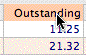
If you click the Distribute button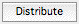
, or press Ctrl-↓/⌘-↓, the amount you have entered into the Amount field will be allocated to each invoice in the list starting at the top and working down.Tip: You can sort the list of invoices by clicking on one of the column headings.
If you set the Auto Distribute option
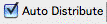
thetransaction Amount is automatically allocated to the Click on the column
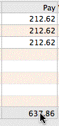
If you did not enter the total into the Amount field, you need to enter that before you can accept the transactionClicking on the total at the bottom of the Pay column will automatically transfer that figure to the transaction Amount.
outstanding invoices as it is entered.
heading to sort the invoices.
You will be asked to insert the cheque stationery in the
You can partially pay an invoice (i.e. pay less than the invoice amount), but you cannot pay more than is due.
printer. You should ensure that the number of the cheque that you use matches the one you have entered in the transaction. Note that you can only print cheques for payment against invoices.
Click the Pay total to set the payment amount
Clicking on the Outstanding amount will transfer it to the
Pay column.
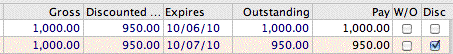
If the creditor offers a prompt payment discount facility, you may not need to pay the full amount of the invoice. MoneyWorks will display the full amount of the invoice, the discounted amount, and the expiry date. The outstanding amount is the amount you need to pay (as determined by the date on the current payment record). If a prompt payment discount is taken, the Disc checkbox is ticked.
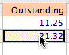
Click in the Outstanding column to transfer that amount into the Pay column.
The post option is always set when you pay a purchase invoice. It cannot be turned off.
If Cancel is clicked the information is discarded.
Sometimes you might want to pay a creditor more than you owe them. To us, this seems a very bad idea, but who are we to judge?
To overpay a creditor:
Create a new payment transaction to pay the creditor
Allocate pay amounts to any other invoices in the list that are to be paid
If you specify a Pay amount that is less than the Outstanding, the balance will be carried forward for you to pay later. However you can also opt (presumably with the agreement of the creditor) to write-off the outstanding balance by setting the W/O (write-off) checkbox. You will be prompted for a write-off account when you accept the transaction.
If the total amount paid is greater than the allocation on the invoice, the difference will be the overpayment amount. When you accept the payment, you will be asked for confirmation, and the general ledger code to which you want to allocate the overpayment amount.
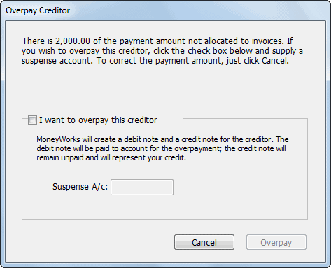
Set the I want to overpay this creditor checkbox, enter a suspense account (for allocation of the overpayment) and click Overpay
The suspense account is remembered for the next creditor overpayment.
Behind the scenes, MoneyWorks will create (and post) a new creditor invoice and an offsetting credit note, both made out to the suspense account (so its balance is not affected), for the overpayment amount. The overpayment amount is allocated to the invoice, leaving the credit note in the system to be offset against future invoices.
And what about GST/VAT/TAX? The Tax amount on the invoice and credit note is determined by that of the suspense account (so for example if this is at a zero rate there will be no Tax). Whether there should be Tax on this or not is something you need to take up with your accountant.
To pay a number of creditors at one time, use the Batch Creditors Payments command. This allows you first to decide which invoices to pay (and how much to pay), and will then produce a payment for each creditor being paid. During the process you can print out cheques and remittance advices if required or create a file of direct payments to submit to your on-line banking software.
To pay a batch of creditors:
The Pay Creditors window will be displayed.
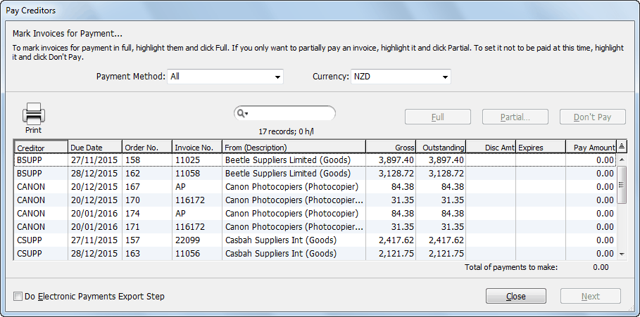
This displays only unpaid or partially paid purchase invoices.
Payment Method: In practice you may pay some creditors by cheque, some by direct credit and others by alternate methods. The payment method for a creditor is set up in its name record.
Set the Payment Method to the type of payment being processed
For example, set it to Electronic to show just those payments due to creditors who are to be paid by direct credit.
Setting it to All will display all outstanding purchase invoices.
Note: Invoices on hold will not appear in the list.
You will only be able to pay invoices in the designated currency.
You can highlight more than one invoice by holding down the shift or Ctrl/⌘ keys. You can also sort the columns, use the Find command etc.
The Pay Amount column will contain the amount necessary to fully pay the invoice, adjusted for any prompt payment discount that is available.
The Partial Payment dialog box will open.
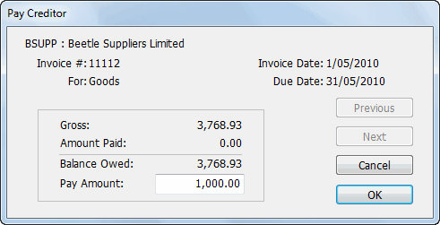
This must be no greater than the balance owed.
Click Next to move onto the next highlighted invoice, or OK to return to the payables list.
Click Don’t Pay to reset the highlighted invoices
The Pay Amount will be set to zero.
You can print the list of payables and allocated amounts, useful if you need to get authorisation before paying invoices. To print the Pay Creditors list:
Choose File>Print, or click the Print List toolbar icon, or press Ctrl-P/⌘-P
You may need to stop processing invoices for payment at this point and return to it later. To do this:
Click the Close button
The Pay Creditors window will close—any allocations made are remembered, and will appear next time you do a Batch Creditor Payments.
To make an electronic banking schedule (i.e. a file that can be loaded into your bank’s on-line banking service):
Set the Payment Method pop-up to Electronic
Only the creditors marked for Electronic payment will be listed. For this to work, you must have stored each creditor’s bank account details — see Electronic banking details for when we pay them. This is available for supported banks only.
Note that you can force any batch to be electronic by turning on the Do
Electronic Payments Export Step option.
Once you have identified the invoices to be paid, you need to generate the actual payment transactions:
Click Next
The Creditor Payment Run window will be displayed
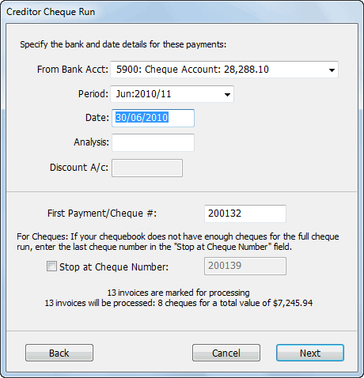
Use this window to specify the details of the payments/cheques to be drawn. The number of payments and the total amount is displayed in the lower half of the window. MoneyWorks prepares one payment for each creditor—this may represent payment for several invoices.
Set the Date, Period and Analysis if necessary
MoneyWorks will create a credit note (coded to this account) for the discount and apply it to the payment amount, reducing the actual payment. The general ledger code will normally be an expense account.
If you are paying these creditors by direct credit, you will prepare the payments as if you were paying them by cheque, but instead of printing cheques you can have MoneyWorks create a file which can be read by your bank’s special on-line banking software3.
MoneyWorks will still ask for a reference number for each transaction (analogous to the cheque number). However in this case the reference number is not one preprinted on a cheque—instead it is for your own use only (and, depending on the bank, may not even appear on your creditor’s payment advice).
This is the reference number for the first payment, and will increment for each additional payment. The reference numbers can be alphanumeric.
Click the Next button
The Print window will be displayed.
Proceed as per Printing Cheques and Payment Schedules below
If you are paying by cheque, you need to specify the numbers of the cheques that will be used. These need to correspond exactly to the numbers pre-printed on your cheque stationery.
MoneyWorks remembers the last number allocated to the previous batch of creditor payments. This batch of payments may not follow consecutively particularly if you are using a manual system for writing cheques.
The final cheque number is automatically entered for you based on the number of cheques that MoneyWorks needs to write to pay all the marked invoices.
MoneyWorks recalculates the number of cheques to be produced and therefore the number of invoices to be paid. The unpaid invoices from this run can be processed in a subsequent run.
Click the Next button
The Print Payments Schedule window will be displayed
The Print Payments Schedule window shows the payment details.
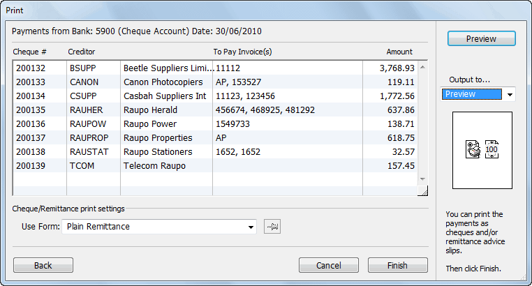
Customised Remittances—For printing a remittance advice with no associated cheque. You can modify or create these forms to meet your own requirements.Customised Cheques—For printing a cheque (which may have an attached remittance) on pre-printed cheque stationery. You can modify these forms to meet your own cheque requirements, or create your own design from scratch.
If you are printing cheques, see below.
If you are creating a payments file for submission to an online banking system — see Electronic Payments. Note that in this case you may also want to print/email remittances, but you will definitely not want to also print cheques.
Notice that the creditors are processed in alphabetical order of creditor code. You can drag the payment records up and down in the list to reorder them (this also changes the cheque number assigned to that payment).
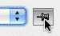
At this stage you should take the time to check that everything is correct. If there are any mistakes—there is an invoice being paid that you didn’t mean to mark for payment, for example—you can click the Back button to return to the previous screen (or Cancel to start over).
The printouts that you can produce are:
Click the Pin button
If you are paying by direct credit and want to email a remittance advice (instead of printing and mailing it):
The Mail Attachment window will be displayed.
Proceed as described in Emailing Forms
Use the following procedure to print cheques on pre-printed
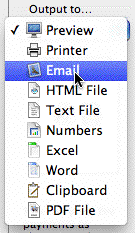
Set the Output option to email a remittance.
Plain Remittance—Remittance Advice slips are printed one-per page for each payment, and list the invoices
to set the default form.
cheque stationery.
being paid. Use this if you are paying by direct credit and want to email payment advice to each creditor.
Summary—Prints a list of the cheques including payee and amount for use as a record or for writing cheques manually.
Choose the cheque form from the Use Form menu and click Print
You will be alerted to put the cheque stationery in the printer.
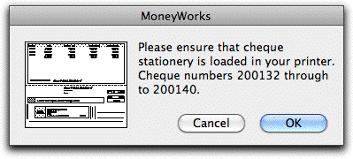
The Print dialog box for your printer will appear.
Clicking Cancel will return you to the Cheque Preview window.
After the cheques have been printed, a confirmation dialog box will appear. You need to physically check that the cheques have been printed. If there has been a paper jam or similar error, you may need to either (a) try printing again or (b) redo the whole cheque run (if the cheque forms were spoiled, thus necessitating reallocation of cheque numbers).
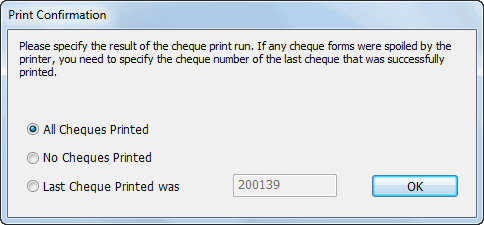
If there was a problem with printing, you can specify the last cheque that printed successfully by clicking Last Cheque Printed and entering the number of the last cheque that successfully printed. The spoiled cheques will be removed from the preview list, still enabling you to complete all the payments that were successfully printed. This allows you to redo the cheque run for the spoiled cheques, allocating new cheque numbers.
If printing failed but no cheque forms were spoiled, click No Cheques Printed then click OK. This will allow you to try printing the cheques again.
If all the cheques were printed successfully, just click OK with the default setting of All Cheques Printed.
Cheque Page Settings: Page Settings for custom Cheque/Remittance Forms are normally done when you create the form in the Forms Designer. If you need to change the page setup or margins (for example, you are printing the form on a different printer) click the Layout button in the Print Form window to open the Form Setup window, in which the page size and margins can be altered — see Setting the Form Size.
This button is labelled Next if you opted to create an electronic payments file by setting the Do Electronic Payments Export Step option. Clicking it will display the Electronic Payments window.
Note: Clicking the Finish/Next button will create and post the actual Payment transactions. This is the point of no return.
If the payments run is cancelled, the transaction records for these payments are not created or posted, and you can repeat the Process Payments command for the same marked invoices later.
The Electronics Payments window is shown:
as the last step in the Batch Creditor Payments if you have set the Do
Electronic Payments Export Step option during your payments run;
when you have highlighted some transactions in the Payments list and chosen Electronic Payments from the Command menu. In this case a file will be made of the payment records that are highlighted.
Use the Electronic Payments window to specify the format of the file (as determined by your bank), your deduction account, and other pertinent details.
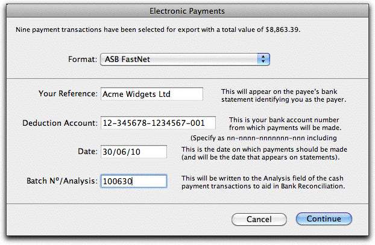
Format Choose the bank format from the pop-up menu of available banks. This is the format in which your file will be created, so you need to ensure that it is the correct one. There is only one format ABA for Australia.
Your Reference: This defaults to your company name, and is what will appear in the Payer field of the payee’s statement.
Deduction Account This is the account number of your bank (the bank from which the payments will be made). It is automatically set to that stored in the Accounts record for the bank — see Account Number. If you change it here, it will update the bank details in the Account record.
Date This is the transfer date which will be output into the file (some banks ignore this). It has no relevance to MoneyWorks at all.
Batch No/Analysis You can enter a batch number into this field, which will be written to every individual MoneyWorks transaction that makes up the batch. This allows you to not only find the transactions easily later if necessary, but also to reconcile the whole batch in your bank reconciliation by holding down the alt/option key and clicking — see Bank Reconciliation.
User ID: This is the ID code supplied by your bank. In many countries (but not New Zealand) you must have this before you can do electronic payments.
MoneyWorks checks to see that bank account details exist for all the creditors being paid, and if no problems are found, the standard File Create dialog box will be displayed.
If you click Stop at this point the banking file will not be created. However any payments made as part of the Batch Creditor Payments command will have been made, and the electronic payment schedule can be created at a later time if need be — see Manual Electronic Payments.
The transfer file will be created, and a summary report printed. You should file this report for reference.
The bank account details for each payee are retrieved from the Bank Account Number field in the Names record. It is your responsibility to ensure that these are correct and they match the format required by the bank. MoneyWorks will only create a batch if all the name records have the Account Number filled out.
Because the payee Account Details are retrieved from the Account Number field in the Name record, only Payments with the Supplier code specified are eligible for transfer. MoneyWorks will not create the batch if you attempt to transfer records without a customer code, or for which the bank account is missing. Note
that MoneyWorks cannot check on the validity of a bank account.